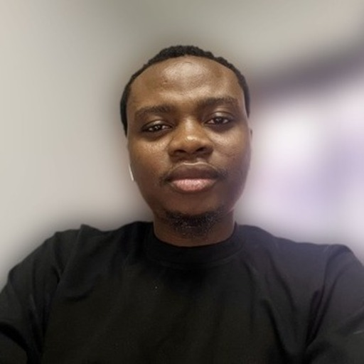

Dami Ajayi

Summary
Dami Ajayi is an experienced designer with expertise in UX/UI design, UX research and recently Web Development.
With a knack for crafting delightful user-centric experiences,
he has helped business transform complex challenges into seamless revenue-driving solutions.
Education
B. Tech Applied Geology,
Federal University of Technology, Akure, Nigeria
2009 - 2014
Work Experience
Senior Product Designer
Terragon, 2021 - Till Date
Responsibilities
- Principal designer actively involved in the continuous development of engagement features within
Terragon's SaaS platform
contributing to the company achieving over $40 million revenue in less than 3 years.
- Established a comprehensive design system in collaboration with designers within product and marketing teams
- Conducting UX and performance audits on Terragon website to test for usability and ensuring the website's current state aligns with the company's objective.
Founding Designer/Developer
Responsibilities
- Led the design of the company's flagship product, an AI tool that empowers teams to document faster and easier
- Designed the brand's logo (with a compelling story) and visual identities for both digital and traditional purposes
- Designed and developed the company prelaunch landing page,
and an upgraded multi-page marketing website, with SEO enablementm, and analytics and CMS integrations to monitor performance
Senior Marketing Designer
Responsibilities
- Improved communication across digital and print platforms by crafting visually engaging and accessible materials, driving client engagement and overall satisfaction.
- Developed strategic marketing campaign visuals for key clients in Terragon’s marketing agency, including Unilver, FCMB, Access Bank, Ornua and Diageo, contributing to a 3x increase in customer engagement.
Skills
- Website Design
- Prototyping
- Web development
- User testing
Others